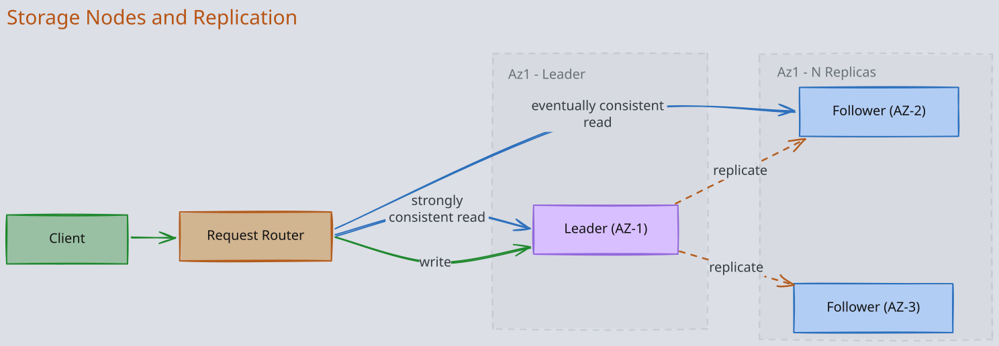
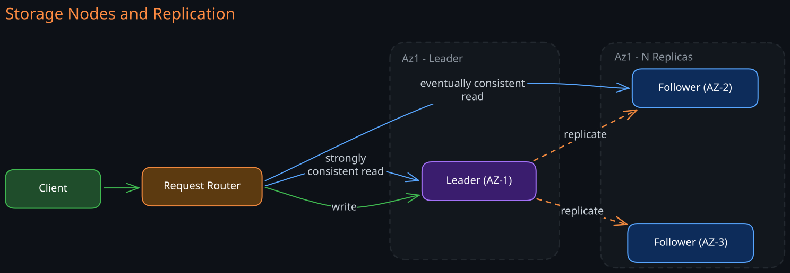
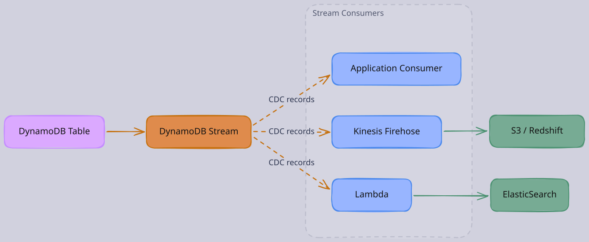
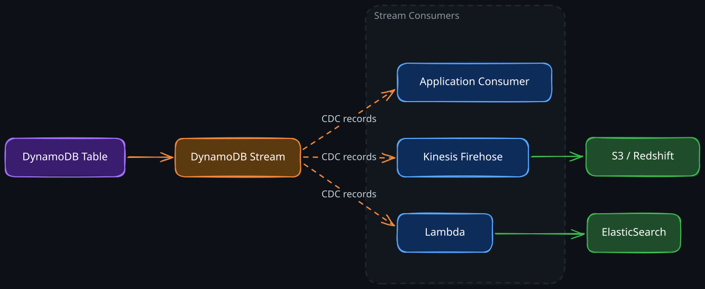
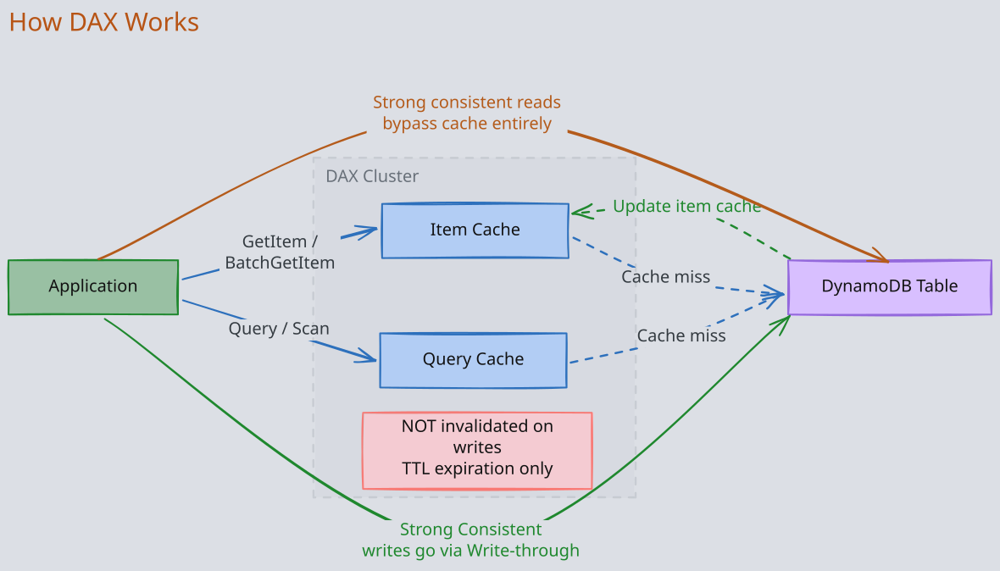
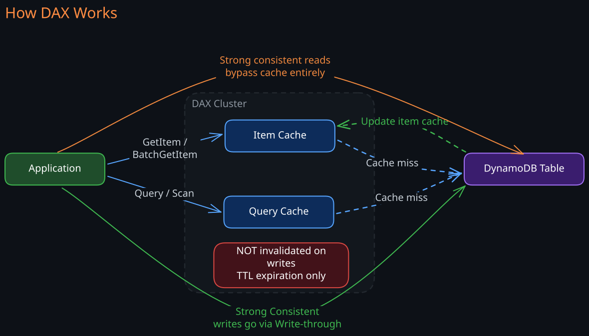

The Story
Amazon’s holiday season outages in the early 2000s weren’t just technical incidents — they were existential threats. Every minute of downtime during Christmas shopping translated directly into lost revenue and broken customer trust. Werner Vogels (Amazon CTO) mandated: core services must never go down during peak shopping season, no exceptions. This wasn’t a theoretical preference for availability — it was a business survival constraint. The Dynamo paper’s famous choice of availability over consistency wasn’t an elegant architectural decision. It was the answer to: “what happens if a customer with a credit card in hand sees an error page instead of a shopping cart?” The answer was: they leave, and they might not come back.
Traditional relational databases were designed for a world where a single powerful machine could handle all your data. As Amazon grew to serve millions of customers, they hit a fundamental wall: relational databases sacrifice availability and latency predictability to maintain strong consistency. During the 2004 holiday season, Amazon’s internal database outages directly translated to lost revenue. The question became: what if we designed a database that guaranteed availability and predictable latency, even if it meant relaxing consistency?
The answer was the Dynamo paper (2007), which made a radical design choice: in a distributed key-value store, you can hash keys to distribute data across nodes, replicate for durability, and serve reads from any replica — accepting that some reads might return slightly stale data. This trades consistency for two properties Amazon cared about most: always-on availability and predictable single-digit millisecond latency regardless of scale.
DynamoDB (launched 2012) is the fully managed AWS service built on these ideas. It combines the distributed architecture of the Dynamo paper with the storage engine technology from earlier AWS internal systems. The result is a serverless key-value and document database where AWS handles all operational concerns — provisioning, patching, replication, backups, and scaling — while the application developer focuses entirely on data modeling and access patterns.
1. Architecture: How DynamoDB Works Internally
Understanding DynamoDB’s internal architecture explains why it behaves the way it does — why partition key choice matters so much, why GSIs are eventually consistent, and why strong consistency costs more.
1. Request Router
Every DynamoDB API call first hits a request router, a stateless fleet of nodes that serves as the front door. The router’s job is simple but critical:
- Authenticate the request using IAM credentials
- Hash the partition key to determine which partition owns the data
- Look up the partition map to find which storage nodes hold that partition’s replicas
- Route the request to the appropriate storage node(s)
The router maintains a cached copy of the partition map (which maps hash ranges to storage nodes). This map is updated when partitions split or move. Because routers are stateless, they scale horizontally — AWS can add more routers to handle more requests without any coordination overhead.
2. Storage Nodes and Replication
Each partition’s data is replicated across three storage nodes in different Availability Zones within a region. One replica is designated the leader and the other two are followers.
Write path: The request router sends a write to the leader node for that partition. The leader writes to its local storage and simultaneously replicates to both followers. The write is acknowledged to the client once two of three replicas (a quorum) confirm the write. This means a single AZ failure never causes data loss — the write is durable on at least two AZs before the client gets a success response.
Read path (eventual consistency): The router sends the read to any of the three replicas. This is fast because it avoids coordination, but the chosen replica might not have received the most recent write yet. In practice, replication lag is typically under 10 milliseconds, but there is no guarantee.
Read path (strong consistency): The router sends the read specifically to the leader replica. Because all writes go through the leader first, reading from the leader guarantees you see the latest committed write. The cost is higher latency (you cannot read from a geographically closer follower) and reduced availability (if the leader is temporarily unreachable, the read fails rather than returning stale data).


3. Storage Engine: B-Trees Within Partitions
Within each storage node, items belonging to a partition are stored in a B-Tree structure on disk. The B-Tree is indexed by the sort key (if one exists), which is why range queries on the sort key are efficient — they traverse a contiguous range of the tree. Items without a sort key are stored directly by their partition key hash.
This is a deliberate design choice. Unlike 04-Cassandra, which uses LSM-trees (optimized for write throughput), DynamoDB uses B-Trees (optimized for read latency predictability). Since DynamoDB’s core promise is predictable single-digit millisecond latency, B-Trees’ consistent read performance is the right trade-off even though they have slower writes than LSM-trees.
4. Partitioning with Consistent Hashing
- DynamoDB uses 02-Consistent-Hashing to map partition keys to physical partitions. The partition key is run through a hash function, producing a value in a fixed hash range. That range is divided among partitions, and each partition is assigned to a set of storage nodes.
- When a partition grows too large (exceeding ~10 GB) or too hot (exceeding its throughput allocation), DynamoDB automatically splits it into two smaller partitions and redistributes them. This happens transparently — the application never knows. The request router’s partition map is updated, and subsequent requests are routed to the new partition locations. Internally, DynamoDB maintains a partition map (structured like a B-tree of hash ranges) that records which storage nodes own which hash range. When a partition splits, its hash range is divided in half and two new entries replace the old one in this map. Each request router caches the partition map locally with a short TTL; if a router’s cache is stale after a split, it routes to the wrong partition, receives a redirect response, refreshes its cache, and retries — which is why DynamoDB can exhibit slightly elevated latency during or shortly after partition splits.
- This is why partition key choice is the single most important design decision in DynamoDB. The hash function distributes items across partitions based solely on the partition key value. If many items share the same partition key, they all land on the same partition — the same physical node — creating a hot partition. A single partition has hard throughput limits (currently 3,000 RCUs and 1,000 WCUs). No matter how much you scale the table overall, a single partition key that receives disproportionate traffic will hit that ceiling and cause throttling.
2. Data Model
1. Tables, Items, and Attributes
DynamoDB’s data model is intentionally simple:
- Table: A collection of items. Unlike relational databases, a table is schemaless except for the primary key, which must be defined at creation.
- Item: A single record — a collection of attributes, analogous to a row. Maximum size is 400 KB.
- Attribute: A name-value pair. Values can be scalars (string, number, binary), sets, lists, or maps (nested JSON-like structures).
This schemaless design means different items in the same table can have completely different attributes. The only requirement is that every item has the primary key attributes.
2. Primary Key Design
The primary key serves two purposes simultaneously: it uniquely identifies an item and determines its physical location. This dual role is why primary key design is so consequential.
Partition Key Only (Simple Primary Key)
A single attribute whose value is hashed to determine the partition. Each partition key value must be unique across the table.
Table: Users
Partition Key: user_id
Every user_id maps to exactly one partition. Lookups by user_id are always single-partition operations — O(1) via hash lookup, then O(log n) B-Tree traversal within the partition.
Partition Key + Sort Key (Composite Primary Key)
Two attributes together form the primary key. The partition key determines which partition stores the item. The sort key determines ordering within that partition.\
Table: Messages
Partition Key: channel_id
Sort Key: timestamp
All messages for a given channel_id are stored together on the same partition, sorted by timestamp in the B-Tree. This means “get the last 50 messages for channel X” is a single partition read that traverses a contiguous range of the B-Tree — extremely efficient.
The composite key also changes the uniqueness constraint: the combination of partition key and sort key must be unique, not the partition key alone. A single channel_id can have thousands of items, each with a different timestamp.
Why Partition Key Choice Matters at the Physical Level
Consider the chain of consequences from a partition key choice:
- Hash function maps partition key value to a point in the hash ring
- Hash ring position determines which partition owns the item
- Partition maps to a specific set of storage nodes (3 replicas)
- Each partition has a hard throughput ceiling (~3,000 RCUs, ~1,000 WCUs)
If you choose status as your partition key and your items have three possible statuses (“active”, “pending”, “archived”), all your data lives on exactly three partitions. If 90% of users are “active”, 90% of all reads and writes hit a single partition. You will be throttled no matter how high you set the table’s total provisioned capacity.
Conversely, using user_id (millions of distinct values) distributes traffic across many partitions. Even if some users are more active than others, the law of large numbers smooths out the load. DynamoDB’s adaptive capacity feature can also reallocate throughput from underutilized partitions to hot ones, but this only works when hotness is temporary and moderate — it cannot fix a fundamentally skewed partition key.
3. Secondary Indexes
DynamoDB’s primary key design forces you to optimize for one access pattern. Secondary indexes let you serve additional access patterns from the same table.
1. Global Secondary Index (GSI)
A GSI is, physically, a completely separate hidden table maintained by DynamoDB. It has its own partition key (and optional sort key), its own partitioning, and its own provisioned throughput.
When you write to the base table, DynamoDB asynchronously propagates the change to the GSI. This is the key insight that explains all GSI behavior:
- Eventually consistent only: Because the GSI is a separate table updated asynchronously, there is a propagation delay. You cannot do a strongly consistent read on a GSI — the data may not have arrived yet.
- Separate throughput: Since the GSI lives on different partitions (possibly different storage nodes), it needs its own read/write capacity. If the GSI’s write capacity is insufficient to keep up with the base table’s write rate, base table writes get throttled — this is a common production gotcha.
- Can be created and deleted anytime: Because the GSI is a separate physical table, DynamoDB can build it in the background by scanning the base table. No structural change to the base table is needed.
- Limit: 20 GSIs per table.
Example: Base table key is (user_id, timestamp). You need to look up users by email. Create a GSI with partition key email and sort key created_at. DynamoDB maintains this separate table automatically.
2. Local Secondary Index (LSI)
An LSI provides an alternative sort key within the same partition. It shares the base table’s partition key but uses a different sort key.
The crucial difference: an LSI is not a separate table. It is an additional B-Tree index within the same partition as the base table data. This explains all its behavior:
- Strongly consistent reads supported: Because the LSI data lives on the same storage nodes as the base table data (same partition), the leader replica has both the base data and the LSI data. A strongly consistent read can query both atomically.
- Shares base table throughput: Same partition means same throughput budget. LSI reads and writes consume the base table’s RCUs/WCUs.
- Must be defined at table creation: The LSI is physically embedded in the partition structure. Adding an LSI later would require restructuring every existing partition — DynamoDB does not support this.
- 10 GB partition limit: Because the LSI data is co-located with the base table data in the same partition, the combined size of base table items + LSI items for a single partition key value cannot exceed 10 GB.
- Limit: 5 LSIs per table.
Example: Base table key is (user_id, timestamp). You also need to query a user’s items sorted by status. Create an LSI with partition key user_id and sort key status.
3. GSI vs LSI Decision Framework
| Dimension | GSI | LSI |
|---|---|---|
| Physical structure | Separate hidden table | Additional B-Tree in same partition |
| Partition key | Different from base table | Same as base table |
| Consistency | Eventually consistent only | Supports strong consistency |
| Throughput | Independent provisioning | Shares base table capacity |
| Creation timing | Anytime | Table creation only |
| Partition size limit | No additional constraint | 10 GB per partition key value |
| Max per table | 20 | 5 |
The decision is straightforward: if you need to query by a different partition key, you must use a GSI. If you need an alternative sort order within the same partition key and need strong consistency, use an LSI. In practice, GSIs are far more common because they are more flexible and the eventual consistency lag is typically imperceptible.
4. Consistency Models
DynamoDB’s consistency model is a direct consequence of its replication architecture. Understanding the mechanism (not just the label) is essential. See also: 02-CAP-and-PACELC, 03-Consistency-Models.
1. Eventual Consistency (Default)
The request router sends the read to any of the three replicas. Since replication is asynchronous, the chosen replica may not have received the most recent write. In practice, convergence happens within milliseconds, but there is no bound.
- Cost: 0.5 RCUs per 4 KB item (half the cost of strong consistency). This is because the load is spread across all three replicas, effectively tripling read throughput.
- When to use: Read-heavy workloads where microsecond-level staleness is acceptable — dashboards, recommendation feeds, product catalogs, session stores.
2. Strong Consistency
The request router sends the read specifically to the leader replica for that partition. Because all writes are committed through the leader, reading from the leader guarantees the latest value.
- Cost: 1 RCU per 4 KB item (double eventual consistency). All strongly consistent reads hit the leader, concentrating load on a single node.
- Latency impact: Strong reads may have higher latency because (a) the leader might not be in the closest AZ, and (b) if the leader is temporarily overloaded, the read queues rather than being served by a follower.
- Availability impact: If the leader is unreachable (AZ failure, leader election in progress), strongly consistent reads fail. Eventually consistent reads can still be served by the two followers. This is the fundamental 02-CAP-and-PACELC trade-off in action.
3. Transactions
To understand why DynamoDB transactions are non-trivial, recall the architecture: items are distributed across partitions, and each partition lives on a different set of storage nodes. A normal DynamoDB write touches exactly one partition — the request router hashes the partition key, finds the leader, writes to it, and gets a quorum acknowledgment. Simple, fast, no coordination. But what if you need to atomically update items that live on different partitions? For example, transferring a balance between two accounts means decrementing one item and incrementing another. If the first write succeeds but the second fails (network issue, throttling, node crash), you have lost money. Neither item “knows” about the other — they may be on entirely different storage nodes in different AZs. You need a way to make both writes succeed or both fail, even though no single node owns both items. This is the classic distributed transaction problem, and DynamoDB solves it with a two-phase commit (2PC) protocol coordinated by the request router.
How It Works
When you call TransactWriteItems (or TransactGetItems for reads):
- Transaction coordinator: The request router that receives the API call becomes the transaction coordinator. It is responsible for driving the protocol across all involved partitions.
- Prepare phase: The coordinator sends a prepare request to the leader of every partition that owns an item in the transaction. Each leader:
- Acquires a lock on the item (preventing concurrent modifications)
- Validates any condition expressions (e.g., “only if balance >= 100”)
- Writes a prepare record to its write-ahead log (so the intent survives a crash)
- Responds with “prepared” or “rejected”
- If any partition rejects (condition failed, item locked by another transaction, node unreachable), the entire transaction is aborted and all locks are released.
- Commit phase: If all partitions respond “prepared”, the coordinator sends a commit message to each. Each leader applies the write, releases the lock, and acknowledges. The coordinator returns success to the client only after all commits are confirmed.
- Recovery: If the coordinator crashes mid-protocol, the prepare records on each partition’s write-ahead log allow recovery. A new coordinator can read these records and either complete the commit or roll back, ensuring atomicity even through failures.
Why 2x Cost
Every item in a transaction is touched twice — once during prepare (lock + validate + log) and once during commit (apply + unlock). Each phase consumes the same read/write capacity as a normal operation. This is why transactions cost exactly 2x the normal RCU/WCU: you are literally doing two rounds of storage node work per item.
Why the 100-Item Limit
The 100-item limit is a practical bound on coordination overhead. Each additional item in a transaction means another partition that must participate in the two-phase protocol. The coordinator must wait for all partitions to respond in both phases — the transaction’s latency is determined by the slowest partition. More items means:
- Higher probability that at least one partition is temporarily slow or overloaded, increasing tail latency
- Longer lock hold times across all involved items (every item stays locked from prepare until commit), increasing contention
- Greater chance of conflicts with concurrent transactions, leading to more aborts and retries At 100 items, DynamoDB draws the line where coordination cost and contention risk become unacceptable for a system whose core promise is predictable single-digit millisecond latency. This is not an arbitrary limit — it reflects the fundamental tension between distributed coordination and low-latency guarantees.
Conflict Detection
If two concurrent transactions both try to modify the same item, the second transaction’s prepare phase will find the item already locked by the first. The second transaction is immediately rejected with TransactionConflictException. The application must retry. This is optimistic concurrency at the transaction boundary — there is no queuing or waiting for locks. DynamoDB prefers fast failure over lock-waiting because waiting would violate its latency guarantees.
5. DynamoDB Streams (Change Data Capture)
DynamoDB Streams captures an ordered sequence of item-level modifications (inserts, updates, deletes) to a table. It is DynamoDB’s change data capture mechanism.
1. How It Works Internally
Each partition maintains its own stream shard — an ordered log of changes to items in that partition. When an item is modified, the storage node appends a stream record to the partition’s shard. Stream shards are a separate storage system from the main B-Tree data, persisted in a dedicated stream storage layer.
Key mechanical details:
- Ordering: Within a single partition key, stream records are strictly ordered. Across different partition keys, there is no ordering guarantee (because they may live on different partitions/shards).
- Shard splitting: When a partition splits, its stream shard also splits. Consumers must handle shard lineage to maintain ordering guarantees across splits.
- 24-hour retention: Stream records are retained for exactly 24 hours, then automatically deleted. This is a cost/storage trade-off — DynamoDB is not designed to be a long-term event log. If you need longer retention, pipe records into Kinesis Data Streams, S3, or another durable store.
- Exactly-once delivery to the shard: Each modification appears exactly once in the stream. However, consumers must handle at-least-once semantics — if a consumer crashes and restarts, it may reprocess records.
2. View Types
When enabling streams, you choose what data each stream record contains:
KEYS_ONLY: Only the primary key attributes of the modified itemNEW_IMAGE: The entire item as it appears after modificationOLD_IMAGE: The entire item as it appeared before modificationNEW_AND_OLD_IMAGES: Both before and after images (most useful for detecting what changed, but consumes the most storage)
3. Common Patterns
- Event-driven processing: Lambda triggers on stream records to send notifications, update caches, or fan out to other services
- Cross-region replication: Global Tables uses streams internally to replicate changes between regions
- Search indexing: Stream records trigger updates to OpenSearch/Elasticsearch indexes
- Analytics pipeline: Stream records are forwarded to Kinesis Data Firehose, then to S3/Redshift for analytical queries


6. DynamoDB Accelerator (DAX)
DAX is a fully managed, in-memory write-through cache that sits between your application and DynamoDB. It is API-compatible with DynamoDB, so switching to DAX requires only changing the SDK client endpoint — no query changes.
1. How DAX Works
DAX maintains two caches:
- Item cache: Caches individual items retrieved by
GetItemandBatchGetItem. Keyed by the item’s primary key. - Query cache: Caches full result sets of
QueryandScanoperations. Keyed by the exact query parameters (table name, key conditions, filter expressions, etc.).
Read path: The application calls DAX. DAX checks its item cache (or query cache). On a cache hit, it returns the result in microseconds. On a miss, DAX reads from DynamoDB, stores the result in its cache, and returns it to the application.
Write path: DAX uses write-through semantics. When the application writes through DAX, DAX writes to DynamoDB first, waits for acknowledgment, then updates its item cache. This means the item cache is consistent with the base table immediately after a write-through operation. However, the query cache is NOT invalidated on writes — it relies on TTL expiration. This is a subtle but important consistency gap: after writing a new item, a Query through DAX may not include it until the query cache entry expires.


2. Consistency Implications
- DAX only supports eventually consistent reads from DynamoDB. If you request a strongly consistent read through DAX, DAX passes it through to DynamoDB directly (bypassing the cache). This means DAX provides no caching benefit for strongly consistent reads.
- The query cache TTL mismatch means DAX is best suited for workloads where slight staleness is acceptable and reads vastly outnumber writes.
- DAX cluster nodes replicate the cache using a primary/replica model. Reads can be served by any node in the DAX cluster, scaling read throughput linearly with cluster size.
3. When DAX Makes Sense
- Read-heavy, latency-sensitive workloads: Gaming leaderboards, real-time dashboards, session stores
- Repeated reads of the same items: Product catalogs, configuration data
- When NOT to use: Write-heavy workloads (DAX adds latency to the write path), workloads requiring strong consistency, workloads with highly variable access patterns (poor cache hit rate)
7. Global Tables: Multi-Region Replication
Global Tables provide active-active multi-region replication. Each region has a full read/write replica of the table. Writes in any region are propagated to all other regions asynchronously via DynamoDB Streams.
1. Conflict Resolution
Because any region can accept writes concurrently, conflicts are possible (two regions write to the same item simultaneously). DynamoDB resolves this with last-writer-wins (LWW) using wall-clock timestamps. The write with the later timestamp survives.
This means Global Tables are not suitable for use cases requiring strict serializability across regions. They work well for workloads where conflicts are rare (user data where each user is typically active in one region) or where LWW is acceptable (counters that can tolerate slight drift, eventually-consistent caches).
2. Replication Lag
Cross-region replication typically completes within one second but can be longer during regional degradation. Applications reading from a remote region should assume eventual consistency.
8. Data Access Operations
1. Query vs Scan
Query is the operation you should use for virtually all production reads:
- Requires an exact partition key match
- Optionally applies sort key conditions:
=,<,>,BETWEEN,begins_with - Reads only the items in the targeted partition — O(log n) in the B-Tree
- Can filter results server-side, but filtering happens after reading from the partition (consumed capacity is based on data read, not data returned)
Scan reads every item in the table sequentially:
- Examines every partition, every item
- Consumed capacity is proportional to the full table size, regardless of how many items match your filter
- Supports parallel scan (divide the table into segments, scan each in parallel) but this still reads the entire table
- Appropriate only for batch jobs, data exports, or one-time migrations — never for user-facing latency-sensitive paths
2. Single-Table Design
A powerful DynamoDB pattern is single-table design: storing multiple entity types in one table and using carefully designed composite keys and GSIs to serve all access patterns. This eliminates the need for joins (which DynamoDB does not support) by co-locating related data in the same partition.
For example, a table might store both User and Order items:
PK SK Attributes
USER#123 PROFILE {name, email, ...}
USER#123 ORDER#2024-001 {total, status, ...}
USER#123 ORDER#2024-002 {total, status, ...}
A single Query on PK = USER#123 returns the user profile and all their orders. A sort key condition SK begins_with ORDER# returns only the orders.
This pattern requires upfront access pattern analysis and is harder to evolve, but it maximizes DynamoDB’s strengths: single-partition reads, predictable latency, no cross-partition joins.
9. Capacity and Throttling
1. Provisioned Mode
You specify Read Capacity Units (RCUs) and Write Capacity Units (WCUs):
- 1 RCU = one strongly consistent read (or two eventually consistent reads) per second for an item up to 4 KB
- 1 WCU = one write per second for an item up to 1 KB
If traffic exceeds provisioned capacity, requests are throttled (HTTP 400 ProvisionedThroughputExceededException). Auto-scaling can adjust capacity in response to traffic patterns, but it reacts on the order of minutes — sudden spikes faster than auto-scaling can respond will still cause throttling.
2. On-Demand Mode
No capacity planning. DynamoDB automatically allocates capacity based on traffic. You pay per request. On-demand costs roughly 5-7x more per request than provisioned mode at steady state, but it eliminates the risk of throttling and the operational burden of capacity planning.
The trade-off is straightforward: provisioned mode for predictable workloads where you want cost control, on-demand mode for unpredictable or bursty workloads where availability matters more than cost.
3. Burst Capacity and Adaptive Capacity
DynamoDB reserves a portion of unused partition throughput as burst capacity (up to 300 seconds of unused capacity). This smooths short spikes. Adaptive capacity redistributes throughput from underutilized partitions to hot partitions in real time. Both mechanisms help, but neither can save a fundamentally bad partition key design where one key dominates all traffic.
10. DynamoDB vs 04-Cassandra
Both are distributed NoSQL databases optimized for high write throughput and horizontal scalability, but they make different fundamental design choices:
| Dimension | DynamoDB | 04-Cassandra |
|---|---|---|
| Management | Fully managed by AWS | Self-managed (or managed via Astra) |
| Storage engine | B-Trees (optimized for read latency) | LSM-Trees (optimized for write throughput) |
| Consistency | Eventual or strong per-request | Tunable quorum (ONE, QUORUM, ALL) |
| Replication control | Fixed 3 replicas, AWS-managed | Configurable replication factor and topology |
| Multi-region | Global Tables (LWW conflict resolution) | Multi-DC replication with configurable consistency |
| Secondary indexes | GSI (separate table), LSI (same partition) | SAI, materialized views |
| Throughput model | Provisioned RCU/WCU or on-demand | Limited only by cluster hardware |
| Operational overhead | Zero | Significant (compaction tuning, repair, rebalancing) |
| Vendor lock-in | AWS only | Open-source, any cloud or on-premise |
Why the differences exist:
- Storage engine: DynamoDB prioritizes predictable read latency (B-Trees have stable read performance). Cassandra prioritizes write throughput (LSM-Trees convert random writes to sequential I/O, but reads may need to check multiple SSTables).
- Consistency model: DynamoDB’s fixed 3-replica, leader-based architecture means strong consistency is simply “read from the leader.” Cassandra’s tunable consistency across configurable replica counts gives more flexibility but more operational complexity.
- Management: DynamoDB’s managed nature means AWS controls partition sizing, replica placement, and capacity allocation. Cassandra gives you full control, which means full responsibility — you choose replication factor, compaction strategy, and rack-aware placement, but you also debug gc pauses and streaming failures.
Choose DynamoDB when: You want zero operational overhead, you are in the AWS ecosystem, your workloads fit the key-value access pattern, and you value predictable latency over raw throughput.
Choose Cassandra when: You need multi-cloud or on-premise deployment, require fine-grained control over replication topology, have write-dominated workloads that benefit from LSM-Trees, or want to avoid vendor lock-in.
Revision Summary
- DynamoDB exists because Amazon needed a database that prioritized availability and predictable latency over strong consistency — the core insight from the Dynamo paper.
- Partition key choice is the most critical design decision. The partition key is hashed to determine which physical partition (and thus which storage nodes) own the data. A bad partition key creates hot partitions that throttle regardless of total table capacity.
- Each partition is replicated to 3 storage nodes across AZs. One is the leader. Writes require a 2-of-3 quorum. Eventually consistent reads go to any replica; strongly consistent reads go to the leader.
- GSIs are physically separate tables maintained asynchronously, which is why they only support eventual consistency and need independent throughput provisioning. LSIs are additional B-Tree indexes within the same partition, which is why they support strong consistency but must be defined at table creation.
- DynamoDB Streams is partition-level change data capture with 24-hour retention. Each partition has its own stream shard with strict per-partition-key ordering.
- DAX is a write-through cache with two caches (item cache and query cache). The query cache is NOT invalidated on writes — only TTL expiration. DAX only caches eventually consistent reads.
- Global Tables provide active-active multi-region replication with last-writer-wins conflict resolution. Not suitable for workloads requiring cross-region serializability.
- Single-table design co-locates related entities in the same partition to avoid cross-partition operations, maximizing DynamoDB’s strengths.
Deep Understanding Questions
-
You have a table with partition key
tenant_idand 5% of your tenants generate 80% of the traffic. Adaptive capacity is enabled. Under what conditions will you still experience throttling, and what are your options to address it? Ans: -
You create a GSI on a high-write-throughput table. The GSI’s provisioned write capacity is lower than the base table’s. What happens to base table writes when the GSI cannot keep up? Why does DynamoDB implement this behavior rather than silently dropping GSI updates? Ans:
-
Your application writes an item through DAX, then immediately queries for items matching a filter that should include the newly written item. The query returns through DAX without the new item. Explain the exact mechanism causing this and how you would architect around it. Ans:
-
A DynamoDB table uses Global Tables across us-east-1 and eu-west-1. A user in Europe updates their profile in eu-west-1. Simultaneously, a backend job in us-east-1 also updates the same user’s profile. Both writes succeed locally. What happens during replication, and what data does each region end up with? Under what application-level conditions is this acceptable? Ans:
-
You are consuming DynamoDB Streams with a Lambda function. A partition split occurs mid-stream. How does this affect your consumer? What ordering guarantees are preserved, and what could be violated? Ans:
-
Explain why LSIs have a 10 GB per partition key value limit but GSIs do not. What physical storage constraint causes this difference? Ans:
-
Your table has a composite key
(device_id, timestamp)and receives 50,000 writes per second uniformly distributed across 10,000 devices. Each device generates 5 writes per second. You provision the table for 50,000 WCUs. Will you experience throttling? What if the distribution shifts so that 100 devices generate 80% of the traffic? Ans: -
A strongly consistent read fails with a timeout. What specific infrastructure event could cause this, and how does it differ from an eventually consistent read timeout? What does this tell you about the availability characteristics of strong vs. eventual consistency in DynamoDB? Ans:
-
DynamoDB uses B-Trees for storage while Cassandra uses LSM-Trees. For a workload that is 90% writes and 10% reads, explain the concrete performance implications of each storage engine choice. Why might you still choose DynamoDB for such a workload? Ans:
-
You enable DynamoDB Streams with
NEW_AND_OLD_IMAGESon a table with 400 KB items that are updated frequently. What is the storage and throughput impact on the stream, and why does DynamoDB limit stream retention to 24 hours rather than offering configurable retention like Kafka? Ans: